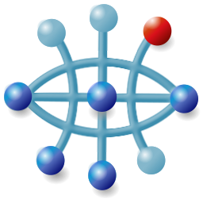

Treebolic WordNet
WordNet® is a large lexical database of English.
Nouns, verbs, adjectives and adverbs are grouped into sets of cognitive synonyms (synsets), each expressing a distinct concept. Synsets are interlinked by means of conceptual-semantic and lexical relations, yielding a network of meaningfully related words and concepts.
Nouns, verbs, adjectives and adverbs are grouped into sets of cognitive synonyms (synsets), each expressing a distinct concept. Synsets are interlinked by means of conceptual-semantic and lexical relations, yielding a network of meaningfully related words and concepts.
Treebolic is a hyperbolic browser.
Treebolic WordNet is also available on Android (see About)